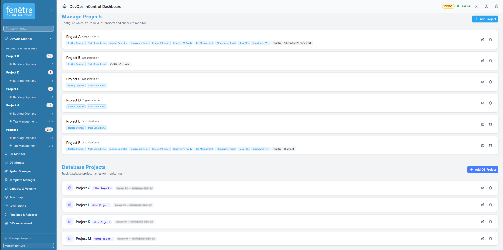

Managing Projects & Checks
The Configuration screen is where you decide which Azure DevOps projects to monitor and which checks to run for each one. Open it from the Configuration link in the sidebar menu.

Adding a new project with checks enabled.
Adding a Project
- Click Add Project at the top of the page.
- Select your Organisation and Project from the dropdowns.
- Optionally set an Area Path to monitor only a specific part of the project (e.g. only your team's area). Check Include child areas to also include sub-areas underneath it.
- Enable the checks you want to run (see the table below).
- Click Save.
Available Checks
Each check looks for a specific type of issue in your backlog or pull requests. You can enable or disable them individually for each project.
| Check | What It Flags |
|---|---|
| Orphan Check | Work items that have no parent, or whose parent is already Done / Closed. |
| Stale Sprint Check | Unfinished items still sitting in sprints that ended a long time ago. |
| Missing Estimate Check | Tasks or bugs in the current sprint that have no time estimate. |
| Unassigned Check | Items in the current sprint that are not assigned to anyone. |
| Release PR Check | Done bugs that are missing a required release pull request. |
| Resolved PR Check | Items marked "Resolved" where all required PRs are completed — ready to move to Done. |
| Tag Overview | Shows all tags used in the project and how many items have each tag (informational). |
| PR Approval Check | Pull requests that have all required approvals but have not been completed yet. |
| Stale PR Check | Active pull requests with no activity for a configurable number of days. |
| Unreviewed PR Check | Active pull requests that have no reviewers assigned. |
Per-Check Options
Some checks have additional options you can adjust when enabling them:
| Option | Applies To | What It Does |
|---|---|---|
| Repository | PR checks | Limit the check to pull requests in a specific repository. |
| Stale days | Stale PR Check | How many days of inactivity before a PR is flagged (default: 14). |
| Ignore reviewers | Unreviewed PR Check | Names to skip when counting reviewers (e.g. "Build Service"). The PR is only flagged if no real reviewers remain. |
| Check for missing | Missing Estimate Check | Choose which fields to check: both Original Estimate & Remaining Work (default), Original Estimate only, or Remaining Work only. |
| Parent type mappings | Orphan Check | Configure which parent work item types are expected for each child type (e.g. Tasks should have a User Story parent). Auto-detect from your process template is available. |
Ignore Patterns
You can tell DevOps InControl to skip certain work items based on their title:
- Ignore title contains — Skip items whose title contains any of these words or phrases.
- Ignore parent title contains — Skip items whose parent's title contains any of these words or phrases.
Separate multiple patterns with commas.
Editing or Removing a Project
- Click the Edit button on a project card to change its settings.
- Click the Delete button to stop monitoring that project entirely.
Tip
Changes take effect immediately. The next time you run checks from the Dashboard, the new settings will be used.